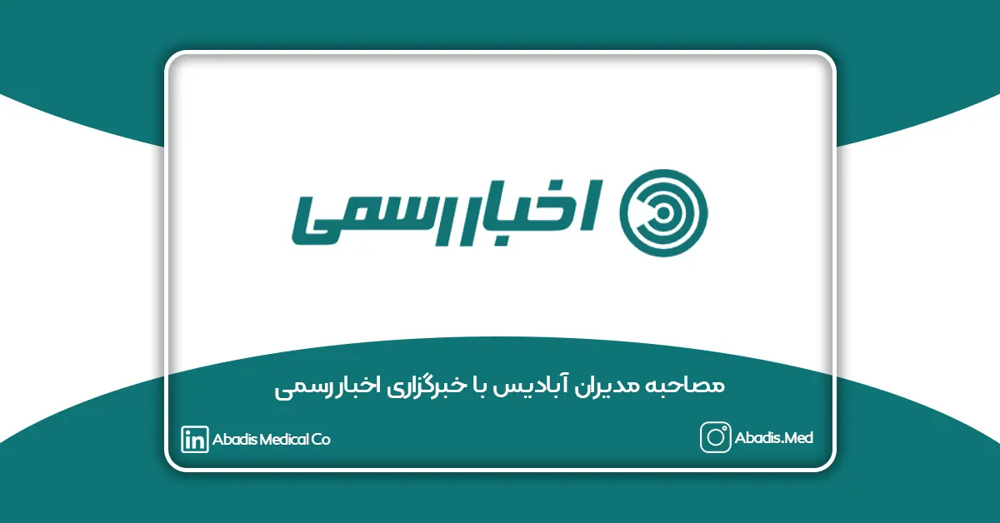

نوید حسنعلی، معاون بازرگانی و فروش، هم بنیانگذار مخازن طبی آبادیس با سابقه مدیریتی ۱۳ ساله در حوزه تجهیزات پزشکی و کارشناس مهندسی پزشکی گرایش بیوالکتریک، در معرفی فعالیت های این شرکت میگوید: «کیسه های یکبار مصرف ساکشن در دنیا از سال ۱۹۹۰ میلادی مورد استفاده کشور های توسعه یافته قرار گرفته است و ما در سال ۱۳۸۹، نمایندگی انحصاری کیسه ساکشن یکبار مصرف را از دایکن ژاپن گرفتیم و پس از آن شروع به فرهنگ سازی استفاده از این محصول در ایران کردیم و در سال ۹۶ با برند مخازن طبی آبادیس، در امتداد فرهنگ سازی استفاده از این محصول و اثر گذاری در کنترل عفونت، تولید کیسه ساکشن را شروع کردیم و اکنون تنها برند فعال در حوزه مصرفی در کنترل عفونت بیمارستانی در ایران هستیم.»
نوید حسنعلی با اشاره به این موضوع که ما در برنامه پنج ساله اول، با لیدر شدن در بازار کیسه ساکشن یکبار مصرف و افزایش ارتباطات در صنعت تجهیزات پزشکی کشور، اقدامات لازم را جهت زیرساخت مدیریتی مناسب و مدرن با سخت افزارها و نرم افزار های نوین انجام داده ایم، میگوید «:ما همچنین با ایجاد بستری مناسب در واحد تولیدی آبادیس که احداث Clean Room بوده است گام های موثری در محصولات نوین ایجاد کرده ایم و در برنامه پنج ساله دوم، این اهداف را دنبال می کنیم:
برندینگ
مدیریت زباله های عفونی و مایع بیمارستانی
حذف یا کنترل عفونت های ناشی از زباله ها و سیالات بیمارستانی
فرهنگ سازی درست برای استفاده حداکثری مراکز درمانی و بیمارستانها
نوید حسنعلی در تحلیل وضعیت صنعت میگوید «:مهم ترین چالش موجود در صنعت تجهیزات پزشکی، عدم وجود نقدینگی مراکز درمانی جهت وصول مطالبات برای تولید کنندگان و شرکت های فعال در این حوزه است. به خصوص در مراکز درمانی دولتی که منتظر تخصیص بودجه هستند، دومین چالش این صنعت، مدیریت سنتی افراد فعال در این حوزه است که موجب بروز مشکلات عدیده در حوزه برندینگ شرکتها شدهاست که فی الواقع ما در ایران «برند» در حوزه تجهیزات پزشکی نداریم و همچنین تصمیم گیری های مدیران سنتی بدون استفاده از گزارشات درست و تحلیل آن ها بدون استفاده از سیستم های نرم افزاری نوین است.»
همچنین علیرضا حسنعلی، مدیر عامل و هم بنیانگذار مخازن طبی آبادیس، با سابقه مدیریتی 10 ساله در حوزه صنعت ساختمان و تجربه 5 ساله در حوزه تجهیزات پزشکی، مهندس مکانیک و کارشناس ارشد MBA ، مزیتهای شرکت مخازن طبی آبادیس را در مقایسه با دیگر شرکتها، اینگونه شرح میدهد:
گارانتی و وارانتی محصولات
ارائه محصولات با کیفیت
ارتباط مستمر تیم فروش و فنی با مراکز درمانی
ارسال رایگان
تحویل کالا در کوتاه ترین زمان ممکن
نگاه علمی و تخصصی به موضوع کنترل عفونت و محیط زیست
خدمات پس از فروش مناسب و با کیفیت
استفاده از فناوری های نوین در حوزه مدیریت و ساختار سازمانی
بالاترین ظرفیت تولیدی کیسه ساکشن یکبار مصرف در خاورمیانه
استفاده و نصب آسان محصولات آبادیس
ردیابی محصولات از تولید تا سفارش و تحویل کالا
پشتیبانی فروش از لحظه ارتباط و ثبت سفارش
اطلاع رسانی به موقع از وقایع و کمپین ها
علیرضا حسنعلی درباره چرایی شرکت در نمایشگاه ایران هلث میگوید «:ما از سال اول هر زمان که ایران هلث برگزار شد شرکت کردهایم چون این رویداد، مهمترین رویدادی که تاکنون، موجب رشد فروش و افزایش سهم از بازار و ایجاد شبکه ارتباطی درست بوده است. در این دوره از نمایشگاه می خواهیم دستاورد های پنج ساله خود را به نمایش بگذاریم و بتوانیم با اثر گذاری در صنعت تجهیزات پزشکی گامی بزرگ در ارتقاء کنترل عفونت در تمام مراکز درمانی کشور ، برداریم.
علیرضا حسنعلی، با اشاره به این که ما اهداف بسیاری از تاسیس مخازن طبی آبادیس داشتیم که یکی از مهم ترین آن ها اشتغال زایی بود و همواره سعی کردیم از جوانان در بخش صنعتی و دفتر مرکزی استفاده کنیم اضافه کرد: «رویکرد ما نسبت به نیروی انسانی منابعی عظیم هستند که بدون آنها توسعه امکان پذیر نیست و با همین رویکرد آموزش و پرورش نیروی متخصص از اهداف اصلی شرکت است و تا الان با داشتن ۳۰ نفر نیرو به صورت مستقیم و با ۳۰ نفر نیروی غیر مستقیم فعالیت خود را ادامه می دهیم.»
به گفته وی فعالیت در حوزه تجهیزات پزشکی نیازمند تحقیق و بررسی بازار است و بهتر است دانشجویان اطلاعات خود را در حوزه تجهیزات پزشکی بالا ببرند و با بیمارستان ها آشنایی کامل داشته باشند و اطلاعات خود را در این حوزه به روز نگه دارند. ما در مخازن طبی آبادیس همیشه سعی کردیم با دانشجویانی که در این حوزه فعال هستند همکاری داشته باشیم. در ضمن موضوع بعدی پرداخت به موقع مراکز درمانی است که واقعا خواهشمندم نسبت به این موضوع، خود مراکز درمانی اقدامات لازم را انجام دهند تا چرخه این صنعت به بهترین نحو ممکن بچرخد و به کمک مسئولین دولتی هم در این زمینه احتیاج دارید.»
شایان ذکر است که بیست و سومین نمایشگاه بینالمللی تجهیزات پزشکی، دندانپزشکی، دارویی و آزمایشگاهی، از تاریخ سوم تا ششم خردادماه ۱۴۰۱ در محل دائمی نمایشگاههای بینالمللی تهران برگزار میشود. در این نمایشگاه که با حجم گستردهای از شرکتهای عمده تولیدکننده تجهیزات پزشکی همراه است، شرکت مخازن طبی آبادیس نیز حضور دارد.
برای مشاهده این مصاحبه در خبرگزاری اخبار رسمی به این لینک مراجعه نمایید.